meet.js Szczecin
Warsztaty
Plan warsztatów
- Wstęp
- Podstawy
- Aplikacja
Wstęp
JavaScript
Gdzie jest wykorzystywany?
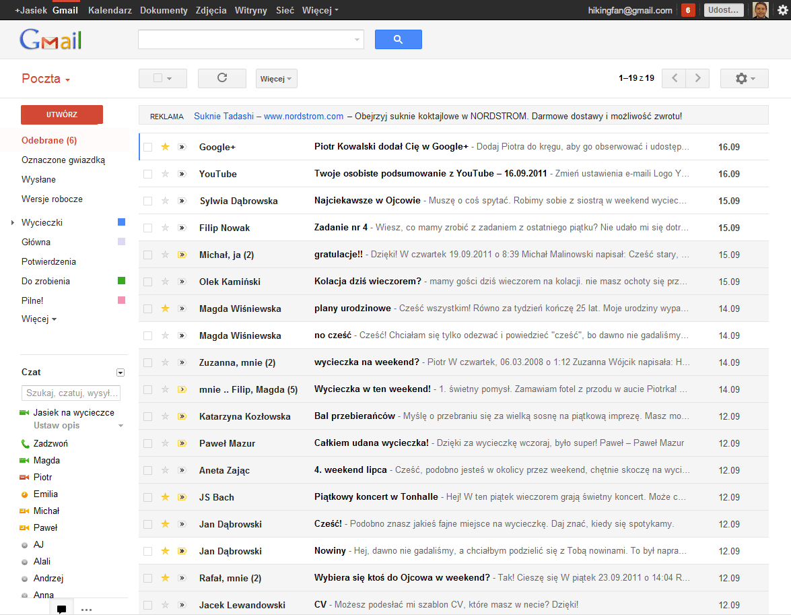
JavaScript
Gdzie jest wykorzystywany?

JavaScript
Gdzie jest wykorzystywany?
Czym jest JavaScript?
ECMAScript

https://github.com/karol-f/meetjs-szczecin
Jak pisać JS?
W przeglądarce
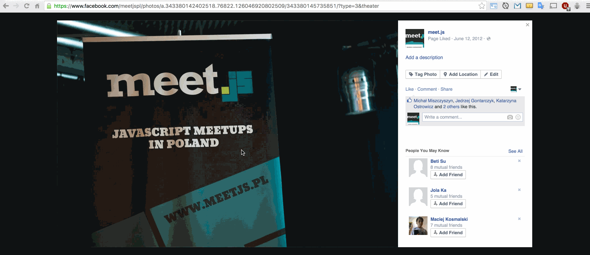
Jak pisać JS?
JSFiddle, Plunker
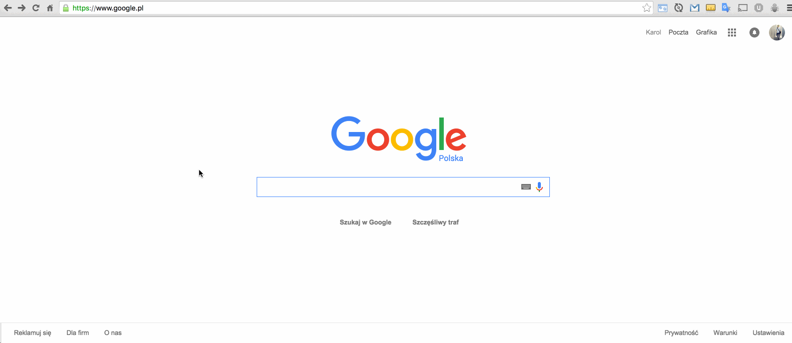
Jak pisać JS?
Edytor online
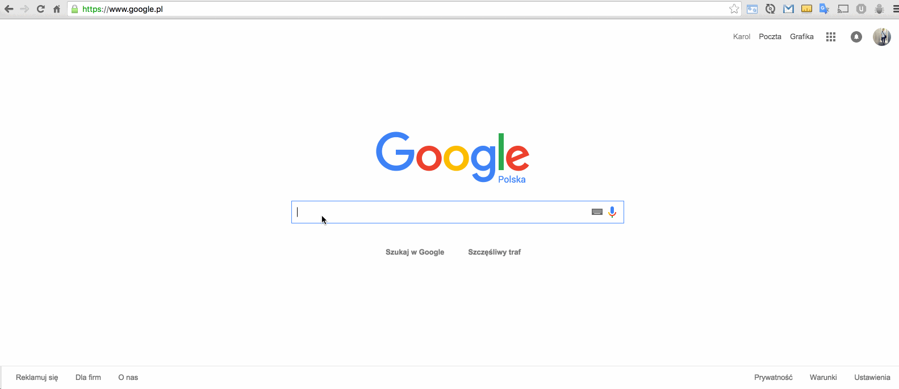
Gdzie szukać pomocy?
Mozilla Developer Network
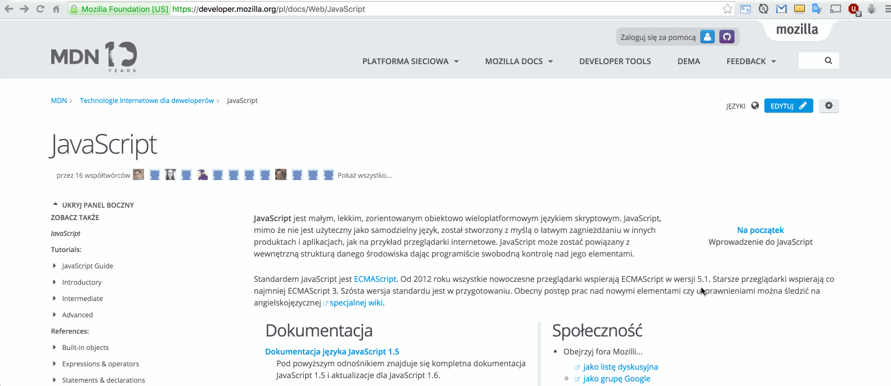
Gdzie szukać pomocy?
StackOverflow
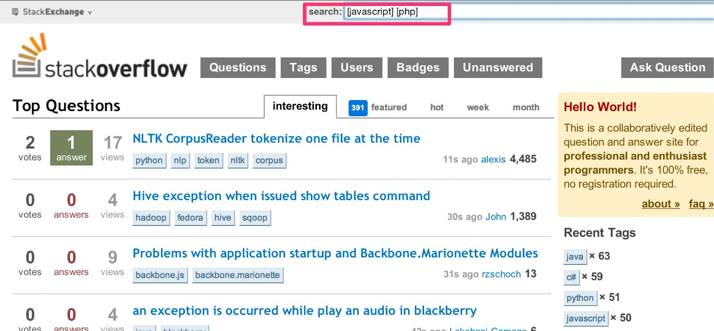
Gdzie szukać pomocy?
W3Schools
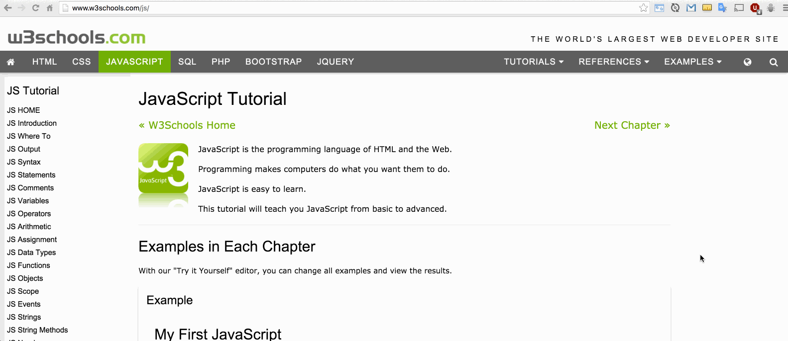
Gdzie szukać pomocy?
Grupy na Facebook
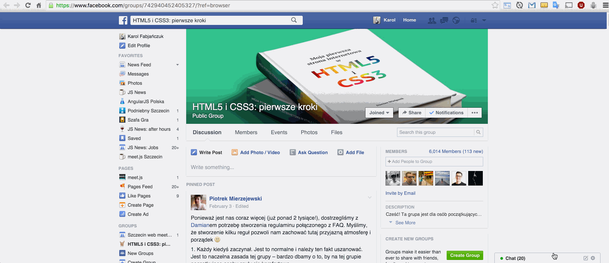
Podstawy
Narzędzia developerskie
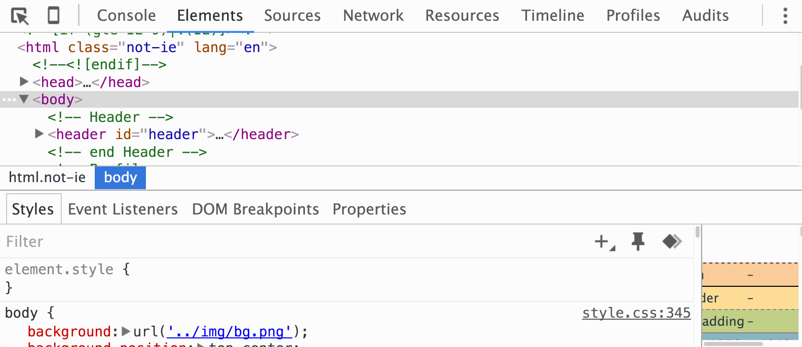
Ciągi znaków
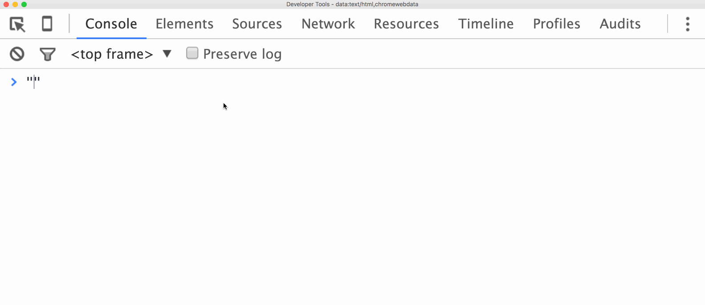
Zmienne
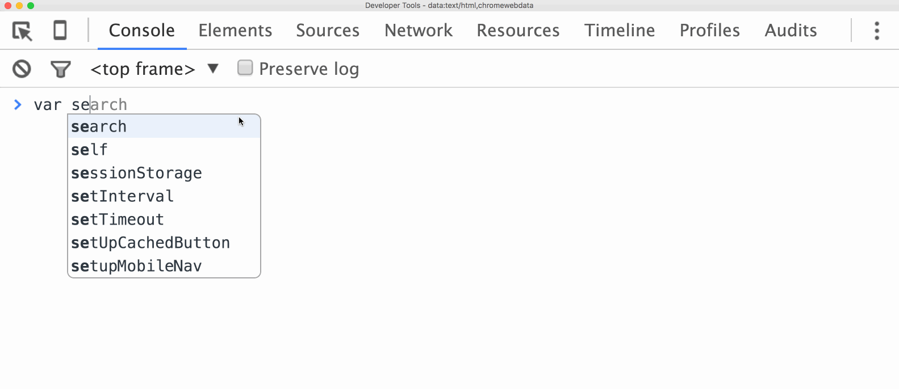
Funkcje

“wbudowane” obiekty
https://developer.mozilla.org/en-US/docs/Web/JavaScript/Reference/Global_Objects
Tworzenie nowych funkcji
Dlaczego?
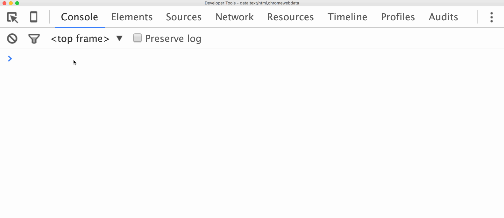
Tworzenie nowych funkcji
Przekazywanie ciągu znaków
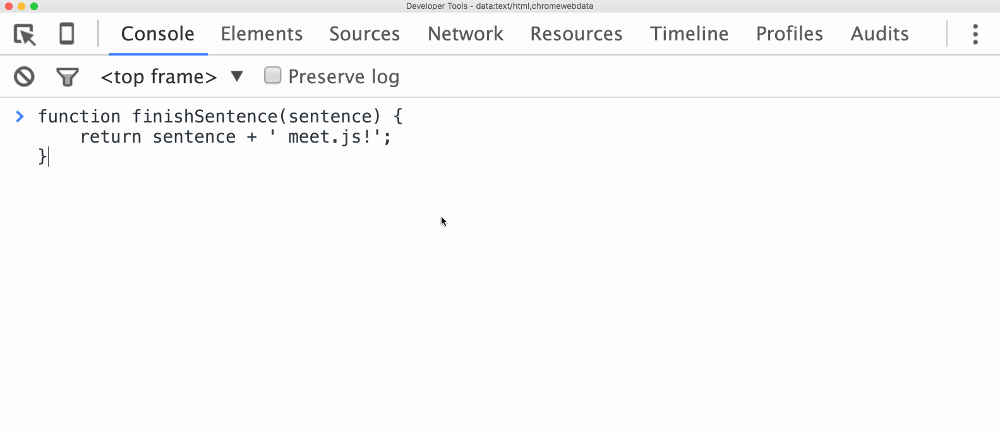
Tworzenie nowych funkcji
Przekazywanie zmiennej
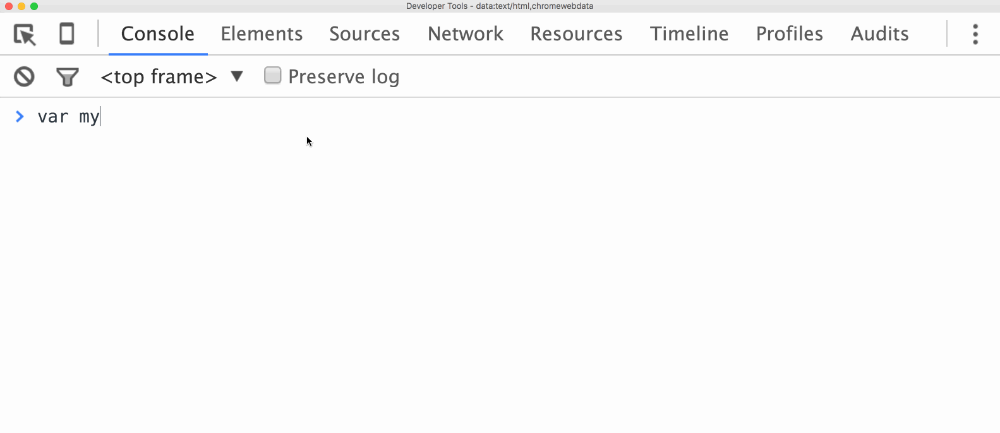
zewnętrzne biblioteki
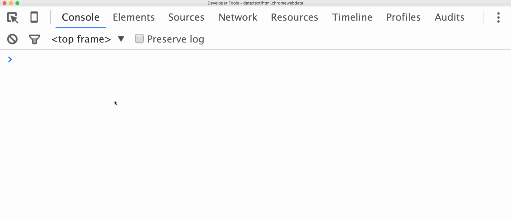
Pętle
Przykład pętli
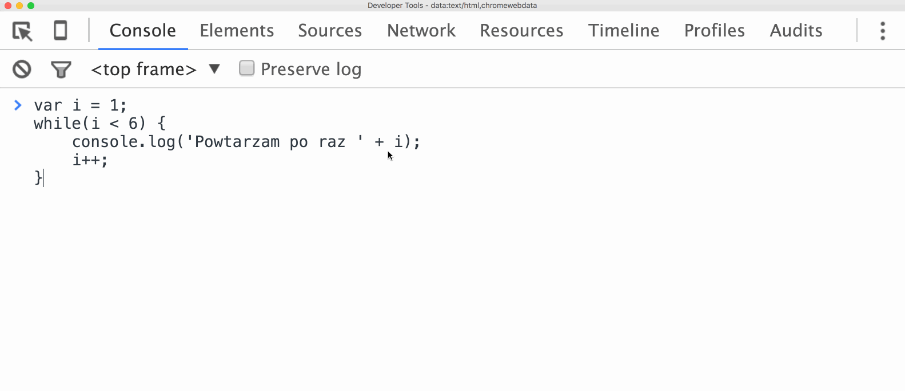
Pętle
Przykład bez pętli
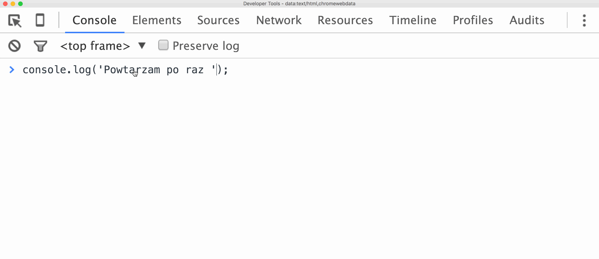
Tablice
Tworzenie
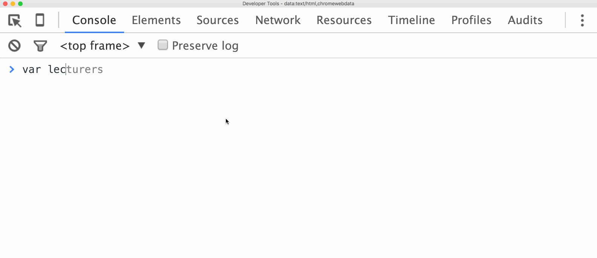
Tablice
Dodawanie nowych elementów
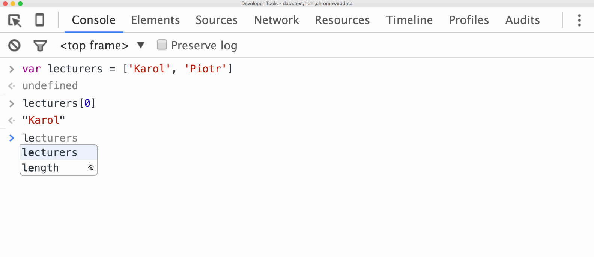
Obiekty
Dlaczego?
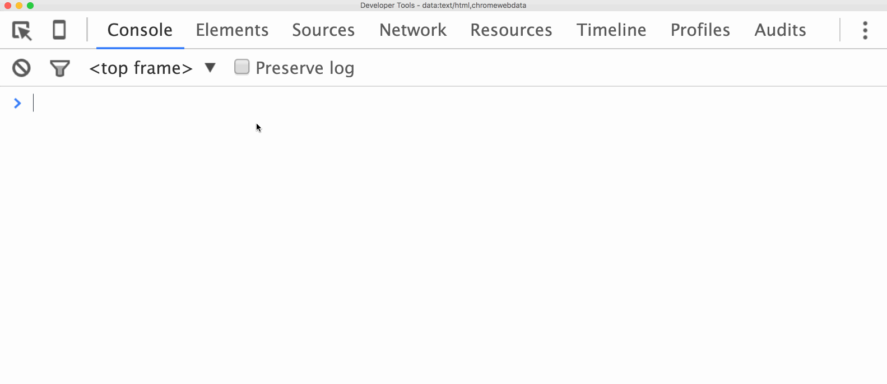
Obiekty
Tworzenie
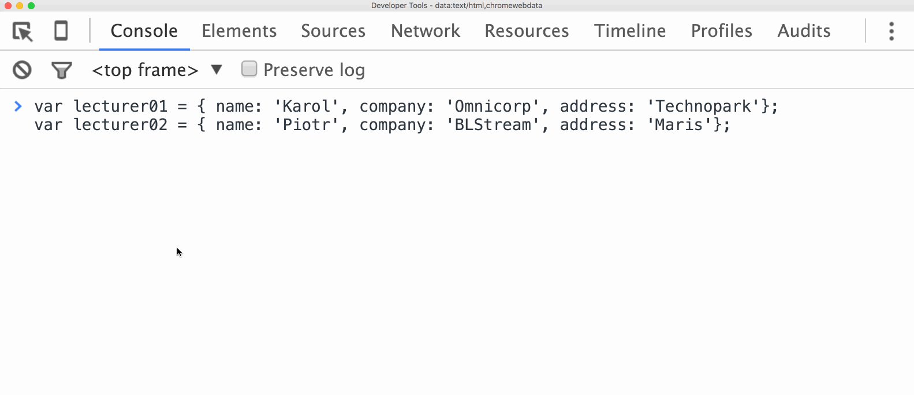
Obiekty
Obiekty w tablicy
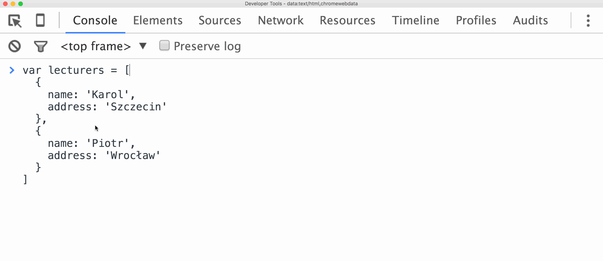
Iteracja tablicy